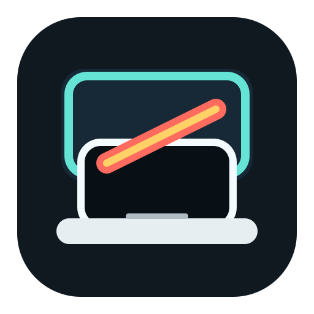

Disconnect the layout
The built-in display is removed from the active WindowServer arrangement, so the cursor cannot enter it.

ClamlessmacOS Apple Silicon
Disconnect the built-in MacBook display from the macOS layout while Touch ID, camera, keyboard, and microphone stay available.
The desk mode macOS does not expose
Clamless is for MacBook users who want the machine open on the desk but do not want windows, the cursor, or display arrangement state leaking onto the built-in panel.
The built-in display is removed from the active WindowServer arrangement, so the cursor cannot enter it.
The Apple Silicon built-in panel framebuffer is asked to enter a low-power off state after layout removal.
When the external display disappears, Clamless prioritizes restoring the built-in display over trusting stale plug state.
Install
Download the latest DMG, drag Clamless into Applications, then launch it. Current public builds are ad-hoc signed, so macOS may require right-clicking the app and choosing Open on first launch.
Drag Clamless.app into Applications.
Choose trusted external displays for automatic switching.
How it works
Clamless uses private SkyLight display topology calls to disable or enable the built-in display in the active desktop arrangement.
After layout removal, it requests panel power changes through Apple Silicon framebuffer APIs so the internal panel goes dark.
Automatic restore combines 1-second polling, display callbacks, IORegistry events, and a layout-level safety check to recover when an external display is unplugged.
clamless-display status
clamless-display off --commit session
clamless-display on --commit sessionCLI included
The bundled helper exposes the same display control path used by the app. It is useful for debugging, automation, and verifying the current display state.
Reality check
Clamless relies on private macOS APIs. That is how it gets the behavior macOS does not expose in System Settings, but Apple can change those interfaces in future releases.
No telemetry.
No black overlay window.
No brightness-only trick.
No claim that the built-in panel disappears from IORegistry.